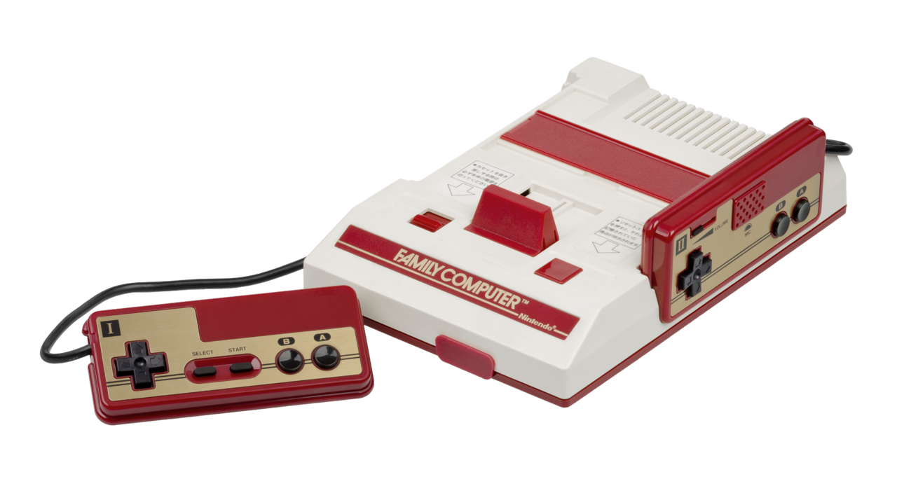

Nous commencons avec la toute premiere console créé par nintendo

Game and Watch (G&W) - une série de jeux portables à écrans à cristaux liquides commercialisés de 1980 à 1991, qui connurent un immense succès dès leur lancement et sauvèrent Nintendo de la faillite 
Ensuite, nous avions
La Famicom, une console 8 bits lancée au Japon en 1983. Elle fut commercialisée en Europe et États-Unis à partir de 1985 sous le nom de Nintendo Entertainment System, plus connue sous le nom de NES. Elle rencontra un gros succès commercial (62 millions d’unités vendues).

Game Boy (GB) - Lancée en 1989, c’est la première console portable à cartouches de jeux interchangeables de l’histoire. Elle dispose d’un écran monochrome affichant différentes teintes de vert (malgré le fait que les émulateurs Game Boy affichent les jeux en monochrome noir et blanc). Ses spécifications techniques (ainsi que celles de toutes ses dérivations et sa successeure, la Game Boy Color, écran exclu pour toutes) se rapprochent très étroitement de celles de la Nintendo Entertainment System.

Super Famicom (Super Nintendo ou SNES en Amérique et en Europe) - Seconde véritable console de salon de Nintendo d’une puissance de 16 bits, elle est lancée entre 1990 et 1992. Elle a connu un énorme succès dans le monde. 49 millions d'exemplaires écoulés.

Nintendo 64 - Console 64 bits, la plus puissante de sa génération, lancée en 1996. Contrairement aux consoles concurrentes de sa génération, la N64 utilisait encore le support cartouche et non le support CD. Les ventes avoisinèrent les 33 millions d'exemplaires vendus notamment grâce aux jeux The Legend of Zelda: Ocarina of Time et Super Mario 64.

GameCube (NGC) - Console 128 bits lancée en 2001. Seule console de sa génération dédiée uniquement au jeu et non au multimédia. Utilise un format de stockage des jeux inédits : le mini DVD. Les ventes allèrent au-dessus des 21 millions d'unités

Nintendo DS (pour « Dual screen ») - Console portable à deux écrans dont un tactile. Un peu plus puissante que la Nintendo 64, elle est rétro-compatible avec la Game Boy Advance (2004).

Wii - La cinquième console de salon de Nintendo lancée fin 2006 partout dans le monde. Elle permet une immersion plus poussée dans les jeux grâce à la capture des mouvements de la Wiimote. Un module, le Wii Motion Plus, a été présenté à l'E3 2008 permettant à la Wiimote de passer en 1.1 et de retranscrire véritablement les mouvements dans le jeu (sans ce module, les mouvements sont pré-calculés par le jeu, c'est-à-dire que si on effectue une attaque de haut en bas, elle ne sera pas de haut en bas dans le jeu). La Wii est la console de salon de Nintendo qui rencontre jusqu'à aujourd'hui le plus grand succès, avec environ 101 millions d'unités vendues

Nintendo 3DS (pour « Three-dimensional screen ») - Console portable à deux écrans utilisant la technique lenticulaire (autostéréoscopie) offrant un affichage 3D-relief sans besoin de lunettes spéciales. Introduisant une nouvelle suite différente de la DS et la DSi, cette console intègre des accéléromètres, des caméras, une batterie ion-lithium permettant une meilleure autonomie. La console était présentée lors de l'E3 2010 et a été lancée le 26 février 2011 (25 mars 2011 en France).

Wii U - La sixième console de salon de Nintendo est commercialisée depuis le 30 novembre 2012. La console, sensiblement de la même taille que la Wii et d'un design similaire (blanc épuré) est indiquée comme plus puissante que les PlayStation 3 et Xbox 360. À l'instar de la Wii, la Wii U se différencie par sa manette : un gyroscope, caméra frontale, écran tactile de 6,2 pouces (non multi-touch), possibilité de commencer à jouer sur la TV pour poursuivre sur l'écran de la manette. Les télécommandes Wii, Nunchuk, les Classic Controlers sont compatibles avec la Wii U. Les jeux Wii restent compatibles, mais pas les jeux GameCube. Elle a été présentée à l'E3 2011 puis 2012. Les développeurs de jeux annoncent que grâce à sa manette, les méthodes de jeux sont inédites.

Nintendo Switch - La septième console de salon est dévoilée le 20 octobre 2016, pour une sortie mondiale prévue le 3 mars 2017. Connue depuis mars 2015 sous le nom de code NX, il s'agit d'une console "hybride", offrant la possibilité de jouer comme si c'était une console de salon ou une console portable selon le choix du joueur, en permettant de passer d'un mode à l'autre sans avoir à interrompre la partie. La Nintendo Switch utilise des manettes détachables, appelées Joy-Con, permettant plusieurs configurations de jeu, que ce soit en solo ou en multijoueur. La Nintendo Switch a aussi eu une version portable nomée la Nintendo Switch Lite